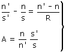
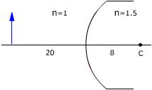
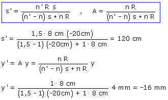

a)
Ecuaciones del dioptrio:

R = +8 cm, n = 1, n' = 1.5

Datos: s = -20 cm, y = 4 mm Incógnitas: s', y'

La imagen se forma 120 cm a la derecha del dióptrio, tiene tamaño 16 mm y está invertida (Real)